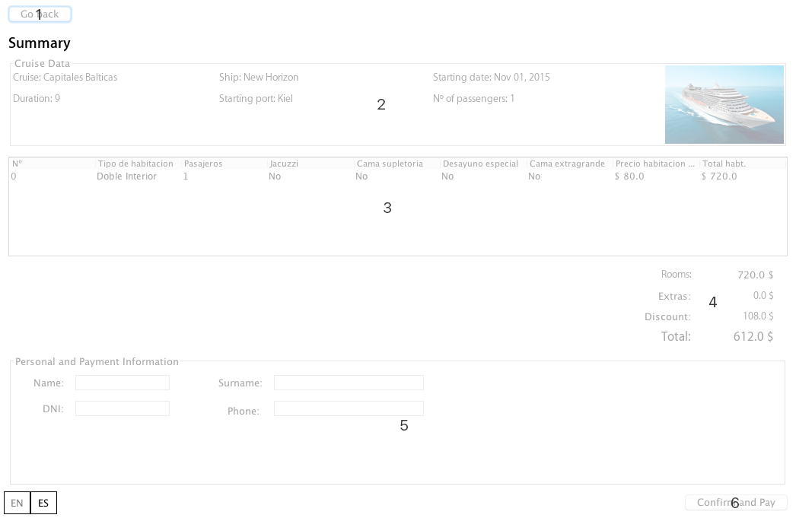
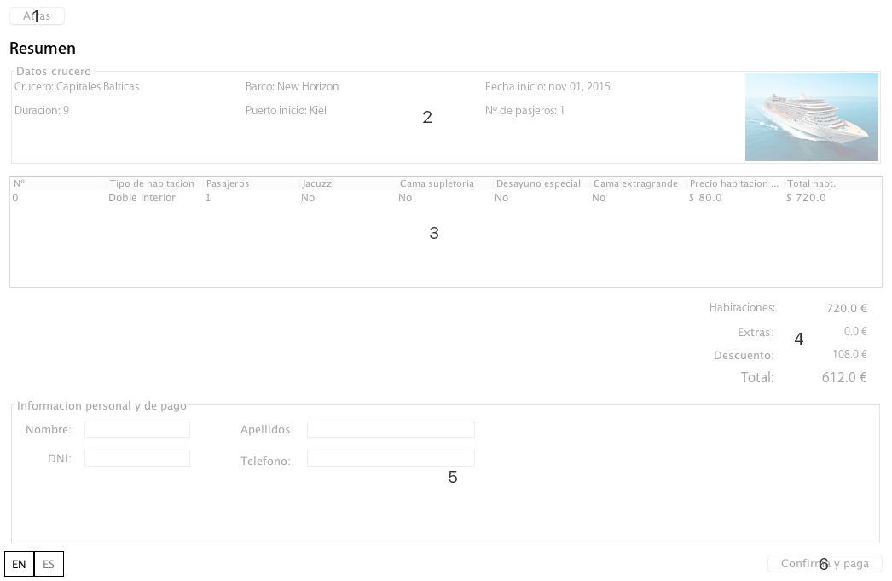

Confirm reservation
From this screen you can see a summary of your reservation as well as the total. To save the reservation must enter their personal data and make click on "Confirm and pay" (6).
If you want to change your booking you only have to click on "Back" (1) at any time and return to the window "book set up".
The parts of this window are described.

- Back to the configuration window.
- Shows data from the cruise that's going to be taken.
- List of rooms included in your reservation.
- Shows the total breakdown reservation.
- Bedrooms: total price of the rooms without extras.
- Extras: total price of all the extras.
- Discount: discount on the total, if any.
- Total: total price payable after discounts.
- Panel personal information and payment.
- Save the backup in the system and generate the relevant receipts. Once you have completed the reservation will not be going back.

Confirmar reserva
Desde esta pantalla puede ver un resumen de su reserva así como del total. Para guardar la reserva deberá introducir sus datos personales y realizar click sobre "Confirmar y pagar" (6).
Si quiere modificar su reserva tan sólo tiene que hacer click en "Atrás" (1) cuando quiera y volverá a la ventana de "configurar reserva".
A continuación se describen las partes de esta ventana.

- Retroceder a la ventana de configuración.
- Muestra los datos del crucero que se va a cursar.
- Lista de las habitaciones incluidas en su reserva.
- Muestra el total de la reserva desgloda.
- Habitaciones: precio total de las habitaciones sin extras.
- Extras: precio total de todos los extras.
- Descuento: descuento sobre el total, en caso de haberlo.
- Total: precio total tras descuentos a pagar.
- Panel de información personal y de pago.
- Guardar la reserva en el sistema y generar los recibos pertinentes. Una ver formalizada la reserva no se podrá volver atrás.